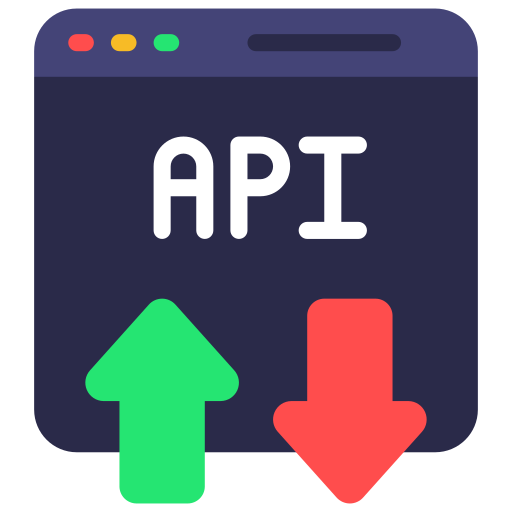
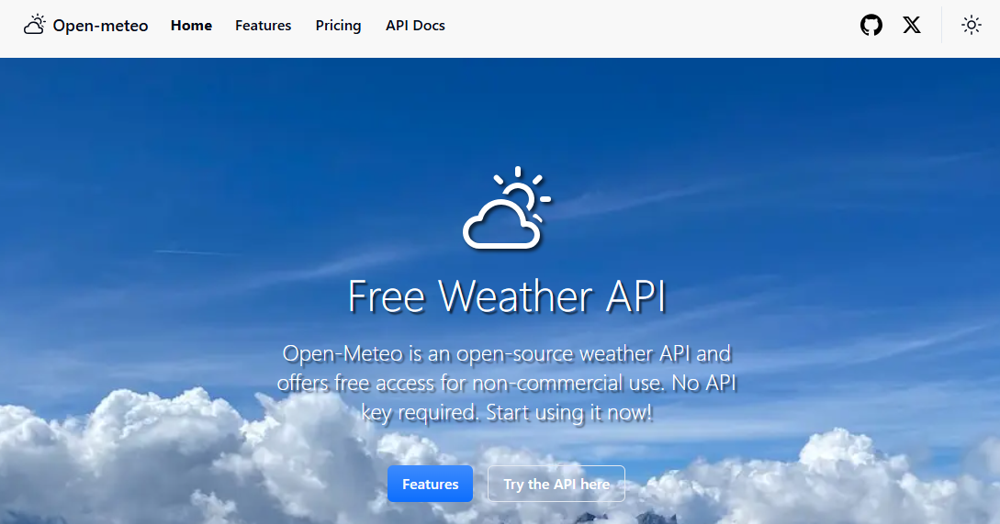

API significa Application Programming Interface, o en español, Interfaz de Programación de Aplicaciones. Es una forma estandarizada de que dos programas o servicios se comuniquen entre sí.
Una API define cómo pedir datos o enviar instrucciones a otro programa o servicio, sin tener que saber cómo funciona por dentro (caja negra). Los datos que se intercambian son principalmente JSON, que como ya hemos comentado, es un formato de texto ligero y bastante descriptivo.
Tipos comunes de APIs
- REST APIs: usan HTTP (como páginas web) y JSON. Son las más comunes, y las que veremos nosotros.
- SOAP APIs:mMás antiguas, basadas en XML.
- WebSockets/APIs en tiempo real: para juegos, chat, etc.
Uso de Postman para explorar APIs
Postman es una herramienta para probar APIs REST, ver respuestas JSON y explorar endpoints en general.

Download Postman | Get Started for Free
Crearemos una nueva Colección y petición:
Por defecto, nos aparece una petición de tipo GET, pero podríamos usar cualquiera de las que hay disponibles:
Usaremos GET con la siguiente URL: https://v2.jokeapi.dev/joke/Programming?type=single&lang=es

Se trata de una API que devuelve chistes sobre Programación. Probamos a lanzarla:
Si devuelve un estatus 200 OK, es que nuestra petición ha sido correcta.
{
"error": false,
"category": "Programming",
"type": "single",
"joke": "No te despedirán del trabajo, si nunca comentas tu código y además eres el único que sabe cómo funciona",
"flags": {
"nsfw": false,
"religious": false,
"political": false,
"racist": false,
"sexist": false,
"explicit": false
},
"safe": true,
"id": 3,
"lang": "es"
}Para poder invocar APIs, es muy importante saber qué parámetros acepta el endpoint. En nuestro caso, le hemos pedido chistes en Español (lang=es). Prueba a mandar un idioma inventado y observa lo que pasa:
Nos devuelve un status 400 bad request, por lo que saber cómo interactuar con las APIs es muy importante. Para eso, deberemos consultar la información de cada API en su documentación de referencia. Por ejemplo, la de jokeapi: JokeAPI - Documentation
Vale, ya lo he visto en Postman, pero... ¿cómo usamos una API desde Java?
1. Creamos la clase que represente la estructura del JSON.
Usaremos la herramienta JSON to POJO Object Online Converter - Json2CSharp Toolkit

¿Y si hay campos que no me interesan? Puedes ignorarlos, Gson no se quejará si hay campos extra. Nosotros, eliminaremos el atributo Flags.
public class Chistes {
public boolean error;
public String category;
public String type;
public String joke;
public boolean safe;
public int id;
public String lang;
}2. Hacemos una solicitud HTTP (con HttpURLConnection):
String apiUrl = "https://v2.jokeapi.dev/joke/Programming?type=single&lang=es";
URL url = new URL(apiUrl);
HttpURLConnection conexion = (HttpURLConnection) url.openConnection();
conexion.setRequestMethod("GET");3. Recibimos una respuesta en JSON.
BufferedReader in = new BufferedReader(new InputStreamReader(conexion.getInputStream()));
StringBuilder json = new StringBuilder();
String line;
while ((line = in.readLine()) != null) {
json.append(line);
}
in.close();4. Usamos una librería como Gson para convertir ese JSON en objetos Java.
Gson gson = new Gson();
Chistes chiste = gson.fromJson(json.toString(), Chistes.class);5. Mostramos o procesamos los datos.
System.out.println("Chiste:");
System.out.println(chiste.joke);Programa completo:
public class APIchistes {
public static void main(String[] args) {
try {
String apiUrl = "https://v2.jokeapi.dev/joke/Programming?type=single&lang=es";
URL url = new URL(apiUrl);
HttpURLConnection conexion = (HttpURLConnection) url.openConnection();
conexion.setRequestMethod("GET");
BufferedReader in = new BufferedReader(new InputStreamReader(conexion.getInputStream()));
StringBuilder json = new StringBuilder();
String line;
while ((line = in.readLine()) != null) {
json.append(line);
}
in.close();
Gson gson = new Gson();
Chistes chiste = gson.fromJson(json.toString(), Chistes.class);
System.out.println("Chiste:");
System.out.println(chiste.joke);
} catch (Exception e) {
System.out.println("Algo ha ido mal.");
e.printStackTrace();
}
}
}Otro ejemplo: API del clima
Open-Meteo es una API gratuita de pronóstico del tiempo, sin autenticación.

Ejemplo de llamada:
https://api.open-meteo.com/v1/forecast?latitude=38.41921088667074&longitude=-0.4464988854601825¤t_weather=trueMutxamel: 38.41974886121347, -0.4482154992747586
Puedes consultar toda su info aquí: Docs | Open-Meteo.com
Vamos a Postman para probar el endpoint:
Como funciona, le damos el JSON de retorno a json2csharp.com para que nos cree las clases en Java:
Sólo vamos a quedarnos con la clase CurrentWeather:
public class CurrentWeather{
public String time;
public int interval;
public double temperature;
public double windspeed;
public int winddirection;
public int is_day;
public int weathercode;
}Pero como vamos a obtener la estructura de la clase Root (para nosotros, se llamará ElTiempo), crearemos una clase estática dentro de ella para simplificar la estructura:
public class ElTiempo {
public double latitude;
public double longitude;
public double generationtime_ms;
public int utc_offset_seconds;
public String timezone;
public String timezone_abbreviation;
public double elevation;
CurrentWeather current_weather;
static class CurrentWeather{
public String time;
public int interval;
public double temperature;
public double windspeed;
public int winddirection;
public int is_day;
public int weathercode;
}
}Ahora, seguiremos el mismo patrón del programa principal usado para los chistes:
public class Clima {
public static void main(String[] args) {
try {
String apiUrl = "https://api.open-meteo.com/v1/forecast?latitude=38.41921088667074&longitude=-0.4464988854601825¤t_weather=true";
URL url = new URL(apiUrl);
HttpURLConnection con = (HttpURLConnection) url.openConnection();
con.setRequestMethod("GET");
BufferedReader in = new BufferedReader(new InputStreamReader(con.getInputStream()));
StringBuilder response = new StringBuilder();
String line;
while ((line = in.readLine()) != null) {
response.append(line);
}
in.close();
Gson gson = new Gson();
ElTiempo weather = gson.fromJson(response.toString(), ElTiempo.class);
System.out.println("Clima actual en Mutxamel:");
System.out.println("Temperatura: " + weather.current_weather.temperature + "°C");
System.out.println("Viento: " + weather.current_weather.windspeed + " km/h");
System.out.println("Hora del dato: " + weather.current_weather.time);
} catch (Exception e) {
e.printStackTrace();
}
}
}